CANOPY: tab-by-tab guide
What each screen shows, what you can do on it, and one line to say about it in the demo.
| Screen | In one sentence |
|---|
| Projects | Every workspace, with a thumbnail of its latest crowns, its cover and its crown range. |
| New workspace | Upload a file (KML, KMZ, GeoJSON, GeoTIFF, PNG, JPG), draw an area, or use the sample, then review before anything is created. |
| Delete workspace | Type the workspace's name to confirm, so nothing is deleted by accident. |
| Overview | The headline numbers: cover, crowns, plausible range, confidence, height, warnings and downloads. |
| Map + Parameters | Crowns on the imagery, plus every setting (detector, AI model size, crown size, threshold) with one-click re-runs. |
| Crowns | A table of every crown with its measurements and why it got its confidence score. |
| Pipeline | The 7 processing stages as images you can step through, each with its method and numbers. |
| Validation | Click real trees in a small patch to measure precision and recall on your own site. |
| Runs | History of every run, what changed between them, and the results side by side. |
| Audit | Downloads (GeoJSON, CSV, overlay, audit zip) and the manifest of how the numbers were made. |
| Limitations | What the tool cannot measure, stated plainly. |
| Ask AI | A per-workspace assistant that answers from this workspace's data and can propose a better run. |
1Projectssidebar → All projects
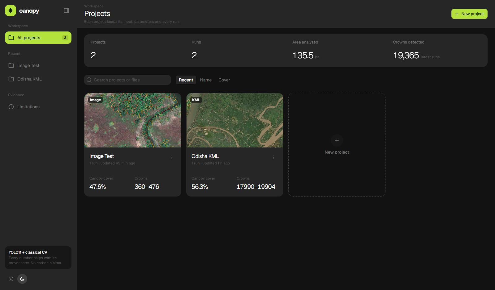
What it shows
- Totals across all workspaces: projects, runs, area analysed, crowns detected.
- One card per workspace: input type badge (KML, Image, GeoTIFF…), a thumbnail with crowns drawn on it, canopy cover and crown range.
What you can do
- Search by name or file, sort by recent, name or cover.
- Open, rename or delete a workspace from the ⋮ menu; start a new one.
Say: "Each workspace keeps its input, its parameters and every run, so the work is never lost and always reproducible."
2New workspaceNew project button
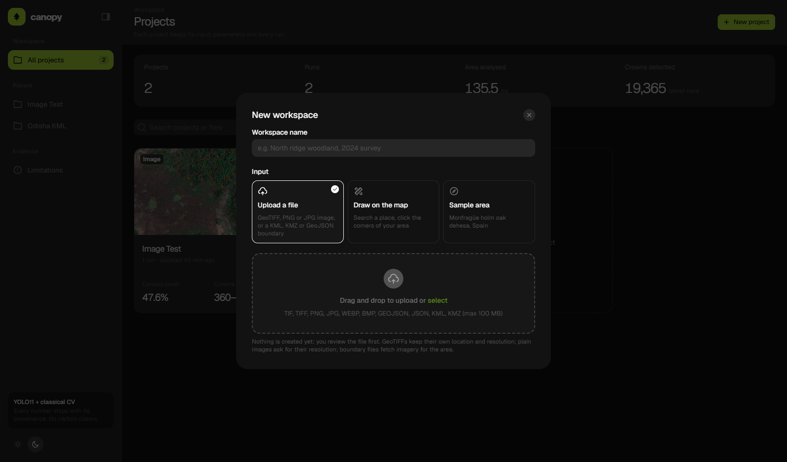
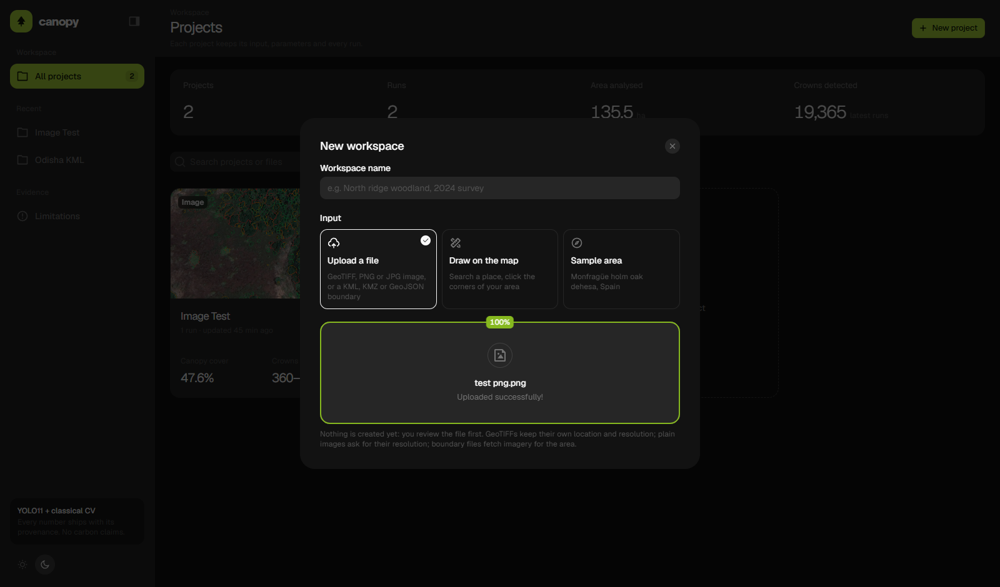
What it shows
- Three ways in: upload a file, draw on the map, or the sample area.
- After upload, a review step: file type, size, pixel dimensions, number of polygons, and what will happen next.
- For a plain PNG/JPG (no location): a ground resolution field with presets: Drone 0.03 m, Aerial 0.1 m, Satellite HD 0.3 m, Satellite 0.5 m, Coarse 1 m, Sentinel-2 10 m.
What you can do
- Pick which polygons of a multi-polygon KML to analyse (select all, or tick a few).
- Change the file, or cancel; nothing is created until you press Create workspace.
- A growing-folder animation plays while the workspace is created and the first run starts.
Say: "A screenshot has no scale, so CANOPY asks for it instead of guessing; every area and diameter is then in real metres."
3Delete workspace⋮ menu → Delete
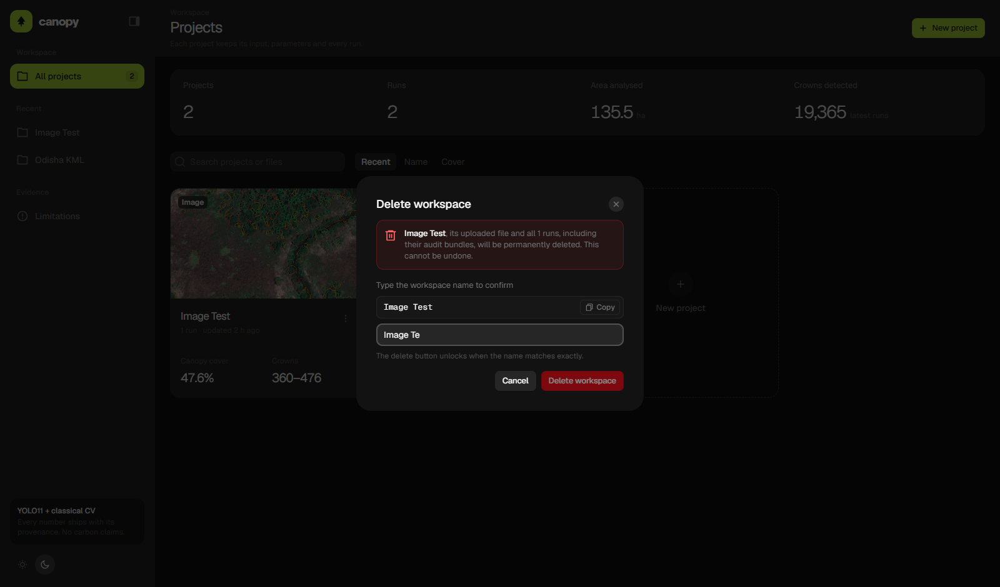
The dialog says exactly what will be lost (the uploaded file, every run and its audit bundle). The red button stays disabled until the workspace name is typed exactly.
Say: "Destructive actions need the name typed, the same pattern GitHub uses for deleting a repository."
4Overviewworkspace → Overview
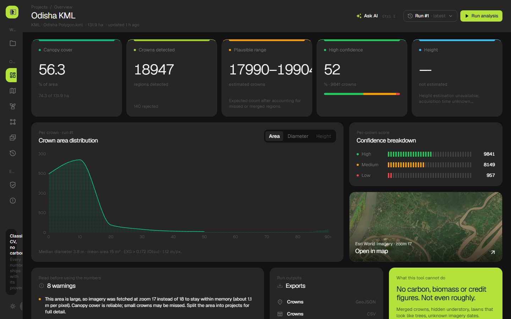
What it shows
- Canopy cover (% of the area and hectares), crowns detected, the plausible range, the share of high-confidence crowns, and height (only when the capture time is known).
- Crown size distribution (area, diameter or height), the confidence breakdown, and a map preview.
- Warnings: every assumption the run made (zoom lowered, resolution assumed, low-contrast threshold…).
What you can do
- Switch the chart between area, diameter and height.
- Download crowns (GeoJSON, CSV) from Exports.
- Small arrows show the change against the previous run.
Say: "The count is a range, not one number, because a low-confidence blob is often two merged trees. The warnings list every assumption behind it."
5Map and Parametersworkspace → Map
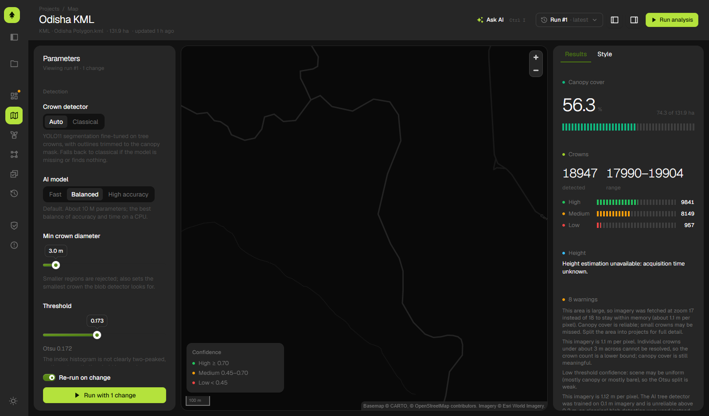
Left: Parameters
- Crown detector: Auto (AI) or Classical.
- AI model: Fast (YOLO11n), Balanced (YOLO11s, default), High accuracy (YOLO11m). Sizes that are not trained are greyed out.
- Min crown diameter, vegetation index (ExG, VARI, NDVI), threshold (Otsu or manual), tile zoom, capture time for height, and resolution for plain images.
- Re-run on change: the analysis re-runs by itself after you stop moving a slider.
Centre and right
- Map layers: imagery, canopy mask, crowns (coloured by confidence, area or height), and rejected regions, so nothing disappears silently.
- Click a crown for its measurements. The Style tab changes colours and fill.
- Right panel: results for the run being viewed.
Say: "You choose speed or accuracy: Fast for a quick look at a big area, High accuracy when the count matters. The run history keeps both."
6Crownsworkspace → Crowns
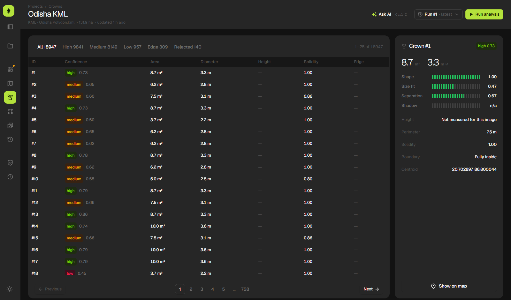
- Every crown: ID, confidence (high / medium / low and the score), area, diameter, height, solidity, and whether it touches the edge.
- Filter chips: All, High, Medium, Low, Edge, Rejected. Click a row to see the four signals behind its score (shape, size against its neighbours, separation, shadow, plus the AI detector's own score).
Say: "Every crown can explain its own confidence score. Nothing is a black box."
7Pipelineworkspace → Pipeline
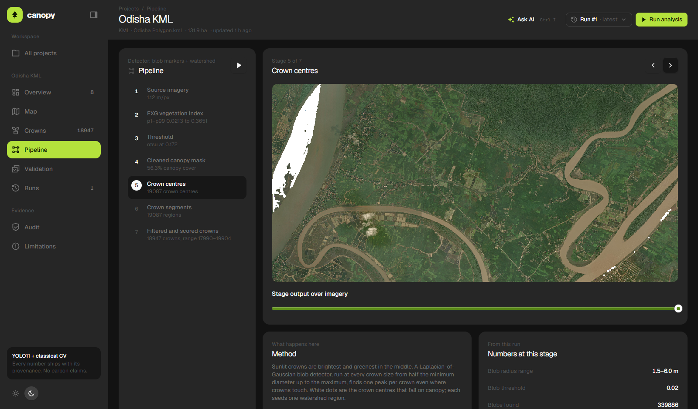
- The 7 stages: source imagery → vegetation index → threshold → cleaned canopy mask → crown centres (or AI boxes) → crown segments → filtered and scored crowns.
- Each stage is a real image from this run, with a blend slider to fade it over the imagery, its method in plain words, and its numbers (resolution, threshold, counts).
- Press play to walk through all stages automatically.
Say: "Most tools show the final map. This shows every intermediate step, so a reviewer can see exactly where a mistake would come from."
8Validationworkspace → Validation
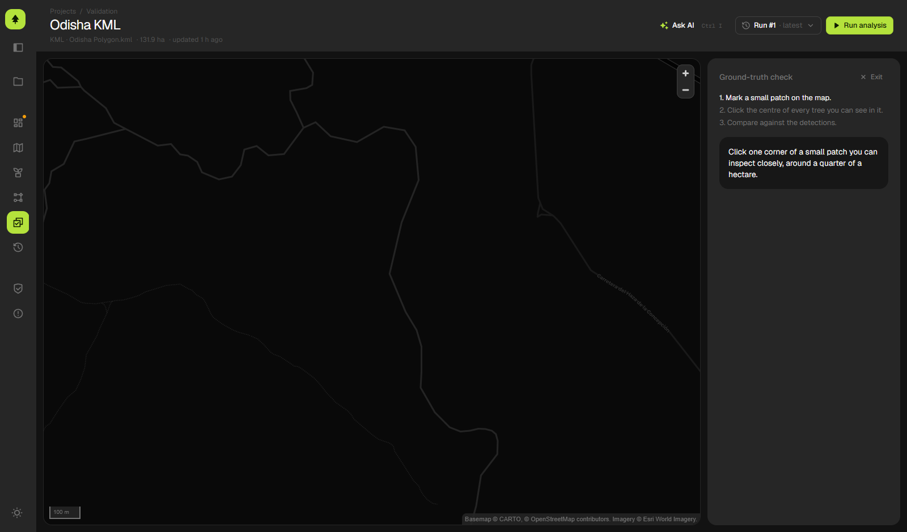
- Mark a small patch on the map (about a quarter of a hectare).
- Click the centre of every tree you can see in it; the detections are hidden so you are not biased.
- CANOPY returns precision, recall, F1, matched / unmatched / missed trees, a correction factor, an adjusted count for the whole area, and optionally a small local calibration model.
Say: "On a new site you don't have to trust my numbers: two minutes of clicking gives you measured precision and recall there."
9Runsworkspace → Runs
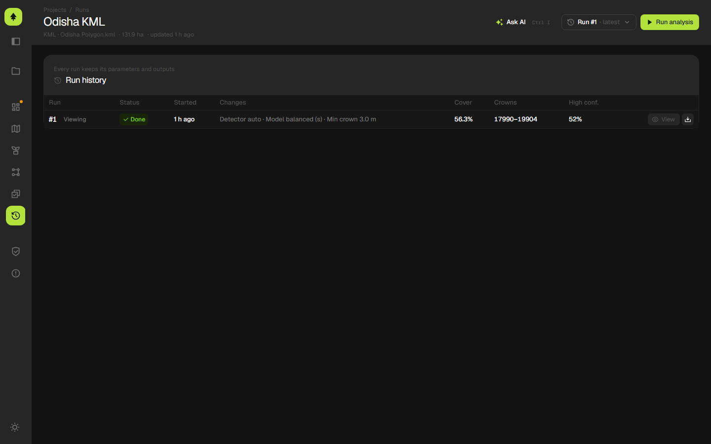
- Every run of this workspace: status, when it started, what changed from the previous run (for example "Model balanced (s) → high accuracy (m)"), cover, crown range, and high-confidence share.
- View any old run, or download its bundle.
Say: "Change one setting, re-run, and the history shows exactly what moved the numbers."
10Auditworkspace → Audit
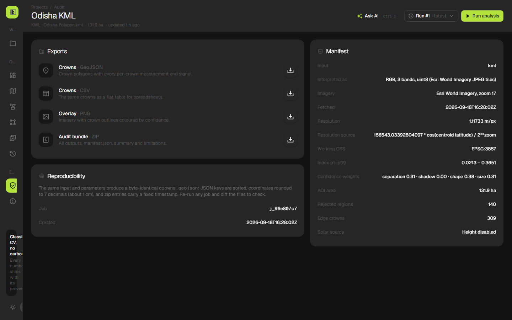
- Exports: crowns as GeoJSON and CSV, an overlay PNG, and the audit bundle zip (all outputs, manifest, summary, limitations).
- Manifest: input type, how it was interpreted, imagery source and zoom, fetch time, resolution and how it was computed, CRS, index range, confidence weights, area.
- Reproducibility: the same input and parameters give a byte-identical
crowns.geojson.
Say: "An auditor can re-run this and get the same bytes. That's what makes a number usable in carbon work."
11Limitationssidebar → Limitations
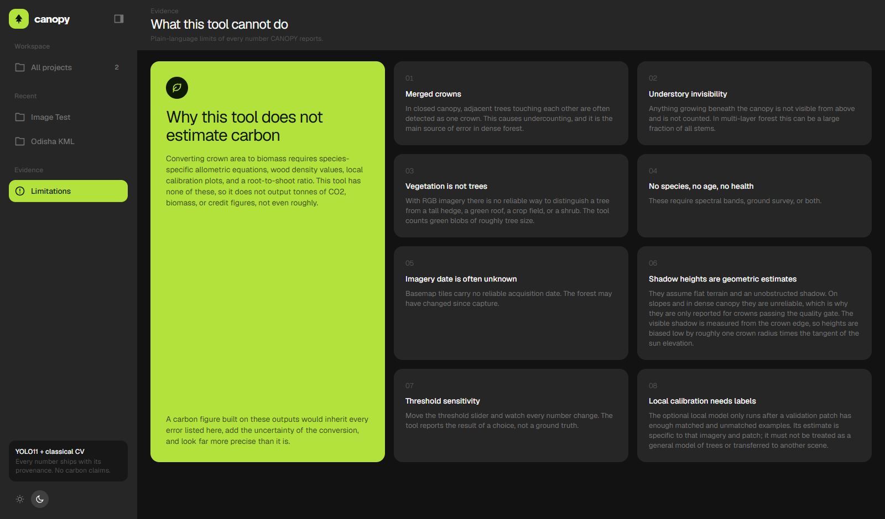
A plain list of what CANOPY cannot do: no carbon or biomass figures, merged crowns in dense canopy, understorey hidden under the canopy, unknown imagery dates, and height only when the sun position is known.
Say: "I'd rather tell you what it can't do than show a number I can't back up."
12Ask AIAsk AI button, or Ctrl + I
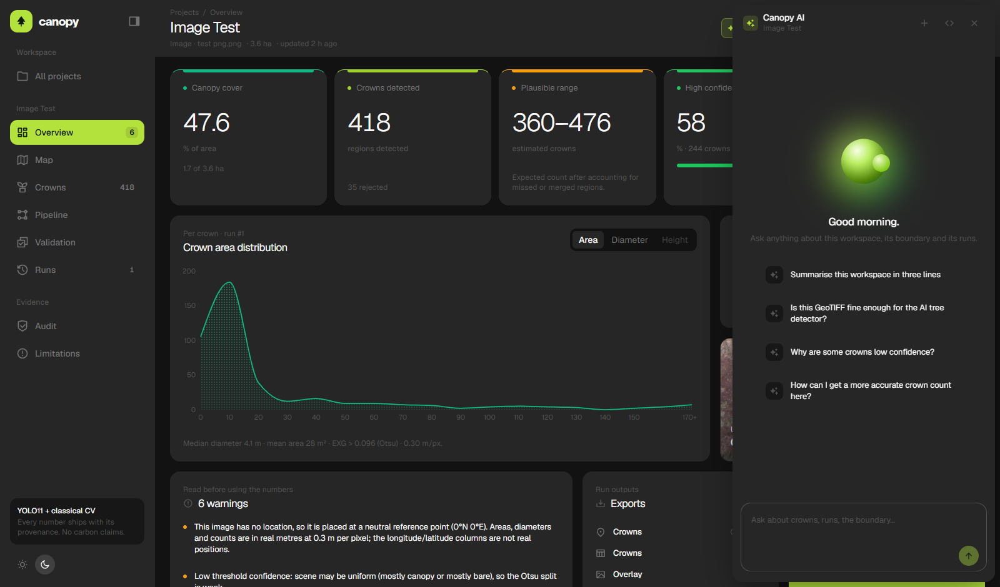
- A panel slides in from the right. It knows this workspace: its boundary, its runs, its numbers and its warnings.
- Suggested questions: summarise the workspace, explain the boundary and imagery, why some crowns are low confidence, how to get a more accurate count.
- When it suggests a better setting, an Apply and run card appears; nothing runs without your click. Web facts come with numbered source links.
- Runs on the You.com Research API (lite tier, about 1 cent per question).
Say: "The assistant reads this workspace's own data first, so it explains these numbers rather than giving generic advice."